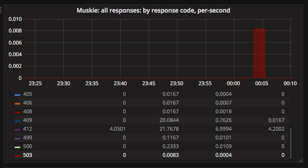
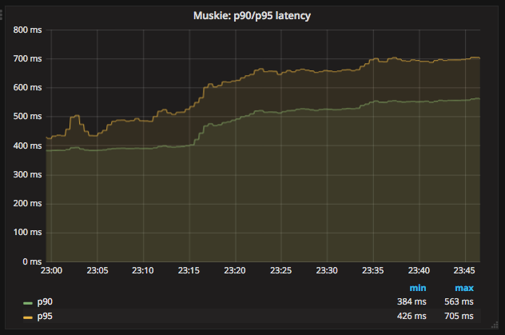

This document is intended for operators and developers of Manta seeking to better understand Manta’s runtime behavior, both under normal operation and during incident response.
You may find other documentation helpful:
This document is organized into a few broad sections:
-
Incident Response Decision Tree: this chapter attempts to walk you through the process of understanding common problems with Manta. This often links directly to specific common tasks later in the document.
-
Basic investigation tasks: this chapter covers a number of different specific tasks associated with debugging Manta, like understanding a Muskie log entry, checking what instances of a service are registered in DNS, and so on.
-
Quick references to HTTP status codes and headers used in Manta
-
Deployment-specific details: this chapter lists a number of details that your company or organization should separately document.
-
General FAQ
Incident Response Decision Tree
Choose a place to start:
Many of these sections refer to checking recent historical metrics. See Deployment-specific details for more information.
Investigating a decrease in overall throughput
Start here if you have reason to believe that inbound or outbound throughput to Manta has recently been reduced.
First, can you confirm the decrease in throughput from Manta’s own metrics? If not, the problem may be external to Manta. Since problems often unfold over several minutes, you may have to look back over several hours to get a sense of recent throughput.
-
Has the error rate increased? Check recent historical metrics for an increase in 400-level or 500-level errors.
-
Yes, there’s an increase in the overall error rate. See Investigating an increase in error rate. It may be that many requests that were previously accounting for throughput are now failing. (If the error rate is not high enough to account for the change in throughput, then it may be useful to investigate latency instead.)
Figure 2. A transient spike in 503 errors. (Note the absolute number is extremely low here. To see this against a larger number of successful requests, you may need to click on "503" in the legend to show only the 503s.) -
No, the error rate is unchanged. Has webapi latency increased? Check recent historical metrics for an increase in average latency, p90 latency, or p95 latency.
-
Yes, webapi latency has increased. See Investigating an increase in latency.
Figure 3. An increase in webapi tail latency. -
No, webapi latency is unchanged or lower. If there are no errors and no increased latency, then Manta appears healthy. Check upstream network connections, client metrics, and client behavior. (e.g., has the client changed its workload?)
-
-
Background: By definition, the throughput of the system (either inbound or
outbound) is the number of completed requests per second times average
request size (in terms of inbound or outbound bytes, depending on which
throughput you’re interested in). If throughput is lower, then one of the
following is likely true:
-
There are fewer requests per second because there’s a fixed concurrency and average request latency has increased. This is generally a server problem. For example, it’s common for there to be a fixed number of clients, each with a fixed maximum concurrency. In that situation, if Manta requests start taking twice as long, then the number of requests completed per second will naturally be cut in half, cutting overall throughput in half.
-
Average request size has reduced because requests are failing (resulting in small requests). This is generally a server problem, though it could also be a client problem. For example, if the average upload is 10 MiB, but suddenly 10% of requests are failing before they reach the upload stage, overall throughput is likely to degrade by 10%, since 10% of requests are now uploading almost no data.
-
There are fewer requests per second because clients are making fewer requests. This would be a client change (and may not be an issue). For example, this could happen when an operator turns off some clients.
-
Average request size has reduced because of a deliberate change in the client workload. This would be a client change (and may not be an issue).
Investigating an increase in latency
When there’s reason to suspect an overall increase in webapi latency, real-time metric dashboards can be used to identify the source. The first step is typically confirming whether latency is visible at webapi.
|
Note
|
A Manta deployment can easily execute tens of thousands of requests per second, each with an associated latency. It’s useful to summarize a large number of latencies with a single number so that we can identify trends, both for raising alarms and for general situational awareness during incident response. Average latency is the sum of latencies divided by the request count. This is useful for understanding changes in throughput, since throughput changes that result from increased latency would manifest as increased average latency. However, normal-looking averages can obscure high-latency requests that have an outsize impact on clients. As a result, we often focus on tail latency, or the latencies of the slowest requests. The notation p99 refers to the 99th percentile latency, which is the latency value where 99% of requests completed within this latency. If the p90 is 300ms, then 90% of requests completed within 300ms. When making broad statements about latency, it’s helpful to be specific about whether you’re talking about average latency or tail latency. However, the questions below are intentionally ambiguous, as increases in either average or tail latency might be cause for further investigation. |
Has latency at Muskie increased?
-
No, Muskie latency has not increased. There does not appear to be an increase in latency from Manta. If clients are reporting elevated latency, try to confirm that. One approach is to collect information from a client about a specific slow request and build a request timeline. This can help determine if latency is coming from within Manta or not.
-
Yes, Muskie latency has increased. At this point, you can find or generate a specific slow request and then understand its latency. But when you’re looking at a trend like this, it’s often helpful to look at latency at other parts of the system. The next question is: Has latency at Electric-Moray increased?
-
Yes, latency has increased at Electric-Moray, too. In this case, has latency at Moray increased as well?
-
Yes, latency has increased at Moray, too. See below.
-
No, there’s no corresponding increase in latency at Moray. This is unusual. There may be a problem with particular electric-moray instances, or the whole tier may be overloaded. See Investigating a slow tier of Node processes.
-
-
No, there’s no corresponding increase in latency at Electric-Moray. This is unusual. There may be a problem with particular webapi instances, or the whole tier may be overloaded. See Investigating a slow tier of Node processes.
-
If you found above that latency at Moray has increased, take a look at the Moray latency metrics broken out by shard name (or zonename, and then map the zonenames to shard names). Remember to ignore shard 1. Have multiple Moray shards seen an increase in latency?
-
No, only one shard has elevated latency. You’ll need to dig into the behavior of this shard. See below.
-
Yes, multiple Moray shards have elevated latency. Moray shards are generally independent, so problems with multiple shards may need to be investigated separately. On the other hand, you may wind up looking at system-wide PostgreSQL metrics next, in which case you may be able to answer questions about several shards at once.
If you’ve established that a particular shard’s Moray latency has increased, the next step is to identify if it’s Moray or PostgreSQL that’s the source of the latency. This is a bit more difficult than previous steps because we do not have metrics for p99 query latency from PostgreSQL.
There are a couple of different questions to ask:
-
Are all Moray zones affected in the same way? Specifically, compare tail latency, average latency (if possible), and queue depth across zones for this shard. Are all of them elevated, or are some different than others?
-
Yes, all Moray zones in this shard appear affected in the same way. This suggests a problem with PostgreSQL rather than Moray.
-
No, some Moray zones in this shard appear much more affected than others. This is more likely to reflect a problem with specific Moray instances rather than PostgreSQL. See the question below about database connections, and see also Investigating a slow tier of Node processes.
-
-
Is there a high rate of Moray queueing on this shard, relative to other shards? If there’s a high rate of queueing, the database might be the source of the latency. If not, it’s possible that Moray is the source of the problem.
-
If there is queueing at Moray, check the number of backend connections (or processes) reported on the PostgreSQL dashboard. Does this shard have the same number of database connections as other shards?
-
Yes, this shard has the same number of connections as other shards. Move on to other questions.
-
No, this shard has fewer connections than other shards. This may indicate a connection management problem at Moray. If Moray instances lose track of connections, they may be limited in how much work they can dispatch to PostgreSQL, resulting in increased latency as requests queue up.
-
No, this shard has far more connections than other shards. If this shard has over 500 connections, that may indicate a problem with Moray. There are generally supposed to be at most 64 connections per Moray zone in this shard, and we usually deploy 3-6 zones per shard.
-
Based on these questions, if it seems like the problem is associated with PostgreSQL, see Investigating PostgreSQL latency. Otherwise, the problem is likely with Moray. See Investigating a slow tier of Node processes.
Investigating an increase in error rate
There are a couple of major kinds of error.
-
A 500-level response (that is, a well-formed HTTP response with a status code between 500 and 599) generally reflects a problem with Manta.
-
A 400-level response (that is, a well-formed HTTP response with a status code between 400 and 499) may happen under normal operation and may indicate no problem at all, or it may reflect a client issue. In rare cases, a 499 response can reflect a server issue. The details depend on the specific type of error and whether the client expects it or not.
-
If the client gives up before the server has sent a response, then the client will likely report a client timeout, while the server will likely report a connection that was abruptly closed by the client.
-
If there’s a networking issue that causes the client or server to abandon the connection, both sides will generally report an explicit socket error.
Response code 507
Response code 503
A 503 Service Unavailable response generally indicates that Manta is refusing
some requests because it is overloaded or some dependencies are not functioning.
There are three major cases where this happens:
-
At least one Moray instance is at its maximum queue length and is refusing new requests.
-
There are not enough online storage nodes to handle the upload.
-
Muskie did not respond to the request quickly enough.
In all cases, you can Investigating a specific request that has failed to find the cause of the failure.
If you already have a particular 503 response, you can quickly determine which of these cases caused it.
-
Does the response have
x-server-nameandx-request-idheaders?-
No, these headers are missing. This indicates Muskie took too long to respond. See either Investigating a specific request that has failed (for just this one request) or Investigating an increase in latency (for a large number).
-
Yes, these headers are present. In this case, the error message in the body of the response will indicate the problem. See Details about specific error messages.
-
If you have a large number of 503s, you can check for systemic causes:
-
Are there Moray shards with high queue lengths? Check recent historical metrics for Moray queue length. If any zone or shard has more than a few thousand items queued, it may be causing 503-level responses.
-
Yes, some shards have long Moray queues. See Investigating elevated Moray latency.
-
No shard has long queues. See Finding (or generating) a failed request to find a Muskie log entry with more details about the source of the 503.
-
Response code 502
Manta no longer issues this response code. If you see it, please file a bug. Historically, this was associated with slow Muskie requests. These are generally now reported as 503s.
Response code 500
This generally indicates a server-side bug. See Finding (or generating) a failed request to learn why the request failed.
Response code 499
499 is an internal status code used to describe when a client appears to have abandoned a request. Specifically, this is recorded when a client closes its socket before finishing a request. In this case, there is no response, since the server may have no place to send it.
499s may be seen if:
-
the client gave up (timed out) before the server sent an initial response (e.g., a
100-continue) -
the client crashed (closing its sockets)
-
a network issue disrupted the connection between client and server
If you have a specific 499 request’s Muskie log entry already (as from a
Muskie log), was the latency fairly
high? (If you know the client’s timeout, was the request latency longer than
this timeout?) Check the "latency" field in the Muskie log entry. Also compare
the Date header in the request with the timestamp of the log entry. If these
don’t match up, the request may have been queued somewhere before being
processed by Muskie.
-
Yes, the request took several seconds (and/or longer than the client’s timeout). Elevated Muskie latency may be the reason for the 499. See either Understanding latency for a specific request or (if you have a lot of them) Investigating an increase in latency.
-
No, the request was short (and/or shorter than the client’s timeout). This appears to be a client issue.
Other 400-level response codes
These are usually client issues, though it’s always possible there are server-side bugs that cause erroneous 400-level responses. The only way to be sure is to examine the request and response to see if the response appears correct.
Investigating a specific request that has failed
Start here if you want to understand why a specific request has failed. These steps will help you find corresponding log entries with more detail.
Ideally, you’ll want to have:
-
the
x-server-nameheader from the response -
the
x-request-idheader from the response -
the approximate time of the response (which calendar hour it was sent)
-
the IP address that the client used to reach Manta
In many cases, you can get by with only some of this information. The more information you have, the easier (and faster) it will be to find more information.
You might also try generating your own request to investigate.
If you find the log entry, see Understanding a Muskie log entry for details. If you find none, see If there is no Muskie log entry.
If you have the x-request-id and x-server-name headers
The x-server-name header gives you the uuid for the "webapi" zone that
processed this request.
-
Was the request completed after the top of the current hour?
-
Yes, the request was handled after the top of the hour. The log entry will be inside the Muskie zone. First, find the datacenter where the Muskie zone that handled the request is deployed. From the headnode of that datacenter, use
manta-oneachto search the Muskie log file for the request id:manta-oneach -z WEBAPI_ZONE_UUID 'grep REQUEST_ID /var/log/muskie.log' | bunyanfilling in
WEBAPI_ZONE_UUIDfrom thex-server-nameheader andREQUEST_IDfrom thex-request-idheader. -
No, the request was handled earlier than that. The log entry will generally be in a historical log file inside Manta itself. Use
mloginormgetto fetch the path:/poseidon/stor/logs/muskie/YYYY/MM/DD/HH/UUID8.logwhere
YYYY/MM/DD/HHrepresent the year, month, day, and hour when the request completed andUUID8is the first 8 characters of thex-server-nameheader. If this object does not exist in Manta, and Manta has been having availability issues, then the historical log file may still be inside the corresponding "webapi" zone. Log into the "webapi" zone and usegrepto search for the request ID in the files in/var/log/manta/upload. -
I don’t know when the request was handled. In this case, you need to check all of the log files mentioned above. You may be able to use a Manta job to scan a large number of historical files at once. For example, you can search all of a day’s log files for one server using:
mfind -t o -n UUID8.log /poseidon/stor/logs/muskie/YYYY/MM/DD | mjob create -o -m 'grep REQUEST_ID || true' -r bunyanAs before,
UUID8is the first 8 characters of thex-server-nameheader.
-
If you find the log entry, see Understanding a Muskie log entry for details. If you find none, see If there is no Muskie log entry.
If you have the x-request-id, but no x-server-name
In this case, you have to check the log files for all "webapi" zones to find the log entry.
-
Was the request completed since the top of the current hour?
-
Yes, the request was handled since the top of the hour. The log entry will be inside the Muskie zone. Separately for each datacenter in this Manta, use
manta-oneachto search all the Muskie logs:manta-oneach -s webapi 'grep REQUEST_ID /var/log/muskie.log' | bunyan -
No, the request was handled earlier than that. Use a job to search historical logs with names:
/poseidon/stor/logs/muskie/YYYY/MM/DD/HH/*.logwhere
YYYY/MM/DD/HHrepresent the year, month, day, and hour when the request completed.For example, you can search all log files for a particular hour with:
mfind -t o /poseidon/stor/logs/muskie/YYYY/MM/DD/HH | mjob create -o -m 'grep REQUEST_ID || true' -r bunyan -
I don’t know when the request was handled. In this case, you need to check all of the log files mentioned above.
-
If you find the log entry, see Understanding a Muskie log entry for details. If you find none, see If there is no Muskie log entry.
If you don’t have the x-request-id
If you don’t have the request id, then you’ll need some other information about the request that you can use to filter it. Examples include:
-
the name of the account, if that account only made a few requests around the time in question
-
the path that was used, if that’s relatively unique among requests
-
a particular client header that’s somewhat uncommon
-
a very small time window in which the request may have happened
If you have this sort of information, your best bet is to use some combination
of grep or json to scan all of the log entries for the appropriate time.
|
Tip
|
When working out a grep or json pipeline, it’s helpful to use mlogin
to get an interactive shell for a particular Muskie log file. There, you can
practice your shell pipeline a few times until it matches what you want,
possibly using slightly different parameters (e.g., a different account name)
than you’ll use for the real search, since you probably didn’t happen to pick a
log file with the precise entry you’re looking for). Then run that same shell
pipeline in a Manta job over a much larger number of Muskie log files.
|
If you find the log entry, see Understanding a Muskie log entry for details. If you find none, see If there is no Muskie log entry.
If there is no Muskie log entry
There’s a difference between there being no Muskie log entry and not being able to find the Muskie log entry for a request.
You may know that there’s no log entry for a request if:
-
you have the rough timestamp and x-server-name header, found a non-empty log for that server for that hour, and there’s no entry for the request in it, or
-
you know the rough timestamp of the request, found non-empty log files for all servers for that hour, and there’s no matching request
Otherwise, it’s possible that the log entry was lost (e.g., if a log file was lost or clobbered, due to a bug or extended availability loss).
-
Did the HTTP response contain an
x-server-nameorx-request-idheader?-
Yes, there was a response with these headers. In this case, a Muskie instance definitely handled the request. There should be a log entry.
-
There was a response, but it did not contain these headers. In this case, the response very likely came from the load balancer and not Muskie. See Finding a load balancer log entry to find more information about the request. This typically happens for one of two reasons:
-
Muskie took too long (usually more than two minutes) to handle the request. Note that even though the load balancer may have reported a 500-level error, the request may have completed successfully (or failed for some other reason) inside Muskie.
-
Muskie did process the request, but it just took longer than the load balancer timeout. This is often a sign of high latency at the metadata tier.
-
Muskie stopped processing a request. This would be a bug in Muskie. It often leads to file descriptor leaks and memory leaks, so it’s very serious. Examples: MANTA-3338, MANTA-2916, MANTA-2907.
-
Muskie sent an invalid HTTP response. (This is very uncommon. Example: MANTA-3489)
-
-
There was no response, or the client timed out before receiving a response. It would be very unusual for the system to produce no response within 2 minutes of a request being completed, but it’s not uncommon for a client to give up before receiving a response.
-
I don’t know if there was a response.
-
In all of these cases, you can get more information about what happened by Finding a load balancer log entry.
Investigating elevated Electric-Moray latency
Investigating elevated Moray latency
Investigating elevated PostgreSQL latency
Basic investigation tasks
Investigating a slow tier of Node processes
The following services within the Manta data path are Node.js-based:
-
Webapi (muskie)
-
Electric-Moray
-
Moray
-
Authcache (mahi)
-
Nameservice (not covered in this section)
|
Note
|
This section assumes that you’re looking at a specific tier of services (i.e., one of the ones listed above). If you’re looking at Moray specifically, as you follow this section, consider only the Moray instances for the particular shard you’re looking at. |
First, have you already confirmed that this tier is reporting high latency? If not, check metric dashboards first to see whether latency is high. See Investigating an increase in latency.
Next, have you also confirmed that the reason for the latency is not due to a dependent service? For example, if you’re here because of Electric-Moray, have you confirmed that Moray isn’t also seeing high latency? If you haven’t, see Investigating an increase in latency for how to locate which tier is the origin of overall latency.
At this point, you’ve confirmed that this tier appears to be the source of a latency increase. Now, use the latency metric dashboards to see is the increase in latency affecting nearly all instances?
-
Yes, nearly all instances are reporting high latency. This might reflect insufficient capacity. Individual Node processes are usually close to capacity when they exceed about 80-85% of CPU utilization. Each component typically has multiple processes deployed in each zone, which means the saturation point (80-85% per process) is different for each type of zone:
Service Processes per zone Saturation point Equivalent CPUs webapi
16
13000% (zone-wide)
13 CPUs
electric-moray
4
325% (zone-wide)
3.25 CPUs
moray
4
325% (zone-wide)
3.25 CPUs
authcache
1
80% (zone-wide)
0.8 CPUs
Given the above guides, use CPU utilization graphs to determine: are most instances in this service close to CPU saturation? (The Deployment-specific details section recommends having both a line graph showing the minimum zone-wide CPU usage for each service and a heat map of zone-wide CPU utilization. If the line graph is above these guidelines, the service definitely looks saturated. The heat map allows you to identify cases where some instances might have more headroom available, but most of them are still too busy.)
-
Yes, most instances are nearing saturation. Deploy more instances of the service in question. See Scaling up a component. Additionally, if the workload has not changed substantially, you may want to check for a memory leak that may have affected many processes. If it has, then deploying more instances will likely only help for a little while — until those suffer the same leak.
-
No, many instances appear to have plenty of headroom. This is very unusual, so it’s worth double-checking that latency is elevated across the board, but latency at dependent services is not high, and CPU utilization is not high. If this is really the case, pick any specific process showing high latency and see Investigating a slow process. Other avenues to consider: is the dependent service close to CPU saturation? If so, clients of the dependent service may see much higher latency than the service reports because of queueing. Is there evidence of elevated packet loss? This can also increase client-side latency without manifesting as latency reported by the dependent service.
-
-
No, only some instances are reporting high latency. In this case, this service does not appear generally overloaded, although it’s possible that some instances are. Next question: can you tell from the per-request metrics for this tier whether the workload is evenly distributed across instances?
-
Yes, the workload is evenly distributed across instances. In this case, it appears that processes are generally doing comparable work, but some are doing it much slower. The next step is to use the dashboard to identify a zone with particularly high latency and dig deeper into a specific slow process. See Investigating a slow process.
-
No, the workload is unevenly distributed. See Investigating service discovery. (Remember, if you’re looking at Moray, this section assumes you’re looking only at instances for a particular shard. As described under Investigating an increase in latency, if you see latency at Moray, you should first isolate the shard and investigate latency in each shard separately.)
-
Investigating PostgreSQL latency
Finding (or generating) a failed request
When trying to understand either an explicit error or high latency, it can be helpful to investigate the log entry written by "webapi" for a specific request.
Do you already have information about a specific request you want to investigate?
-
Yes, I have information about a specific request. See Investigating a specific request that has failed.
-
No, I don’t have information about a specific request yet. Move on.
Next question: does the problem appear to be reproducible? Try reproducing
the problem with the node-manta
command-line tools (e.g., mls). You can use the -v flag and redirect stderr
to the bunyan command to see request and
response headers, like this:
$ mls -v /poseidon/public 2> >(bunyan)
[2018-07-19T21:18:48.146Z] DEBUG: mls/MantaClient/7054 on zathras.local (/Users/dap/install/node-v4.9.1-darwin-x64/lib/node_modules/manta/lib/client.js:1536 in ls): ls: entered (req_id=4b4927be-fc1f-4dd8-88fe-2ae75dcbc262, path=/poseidon/public)
[2018-07-19T21:18:48.148Z] DEBUG: mls/MantaClient/7054 on zathras.local (/Users/dap/install/node-v4.9.1-darwin-x64/lib/node_modules/manta/lib/client.js:1128 in info): info: entered (req_id=0f34c68e-2072-405a-be3a-248e8020f1ba, path=/poseidon/public, id=0f34c68e-2072-405a-be3a-248e8020f1ba, query={})
headers: {
"accept": "application/json, */*",
"x-request-id": "0f34c68e-2072-405a-be3a-248e8020f1ba"
}
[2018-07-19T21:18:48.189Z] TRACE: mls/MantaClient/7054 on zathras.local (/Users/dap/install/node-v4.9.1-darwin-x64/lib/node_modules/manta/node_modules/restify-clients/lib/HttpClient.js:314 in rawRequest): request sent
HEAD /poseidon/public HTTP/1.1
Host: us-east.manta.joyent.com:null
accept: application/json, */*
x-request-id: 0f34c68e-2072-405a-be3a-248e8020f1ba
date: Thu, 19 Jul 2018 21:18:48 GMT
authorization: Signature keyId="/dap/keys/56:f3:e1:56:3d:e6:f7:83:a9:ce:19:5d:62:ba:5c:1f",algorithm="rsa-sha1",headers="date",signature="kG7IydhNO06ImfI6hFzFXXoSrWT6+2kCcDUC3swGebIr7YxeDcLEWMxGzB4z5lC29Vv7kgpLGaTc218m+63D0Y3M84LTNCvM1Va5COetXhIHkkAlBtXpJt5MUjqsRFK1xrpGKJjDc1QIBGSQIDmh4p6wNjofeaLX8jYnYa7FagW5iyQIHQmpAwe/AO+9Bg7fXBgzfvVZjWfhLaBA4G2CwuCSlkpF7mR7t04pTn+oxOmufE5h6XI/VLNsLZyQkc6prBFDoSiOLMgZsGfdsF11J9c/lCK/PW1y4MlTZBDGG8W1F0ssUEx0euLdm4TsqoBc1cfeIC43fV6sR2nN/CSiow=="
user-agent: restify/1.4.1 (x64-darwin; v8/4.5.103.53; OpenSSL/1.0.2o) node/4.9.1
accept-version: ~1.0
[2018-07-19T21:18:48.861Z] TRACE: mls/MantaClient/7054 on zathras.local (/Users/dap/install/node-v4.9.1-darwin-x64/lib/node_modules/manta/node_modules/restify-clients/lib/HttpClient.js:210 in onResponse): Response received
HTTP/1.1 200 OK
content-type: application/x-json-stream; type=directory
result-set-size: 5
date: Thu, 19 Jul 2018 21:18:48 GMT
server: Manta
x-request-id: 0f34c68e-2072-405a-be3a-248e8020f1ba
x-response-time: 254
x-server-name: 511ea59e-2a4a-486b-9258-ef59016d064d
connection: keep-alive
x-request-received: 1532035128176
x-request-processing-time: 684
[2018-07-19T21:18:48.867Z] DEBUG: mls/MantaClient/7054 on zathras.local (/Users/dap/install/node-v4.9.1-darwin-x64/lib/node_modules/manta/lib/client.js:820 in get): get: entered (req_id=dce478bd-6bc7-451b-ac2b-22d74d7bfd37, path=/poseidon/public, id=dce478bd-6bc7-451b-ac2b-22d74d7bfd37)
headers: {
"accept": "application/x-json-stream",
"x-request-id": "4b4927be-fc1f-4dd8-88fe-2ae75dcbc262",
"date": "Thu, 19 Jul 2018 21:18:48 GMT",
"authorization": "Signature keyId=\"/dap/keys/56:f3:e1:56:3d:e6:f7:83:a9:ce:19:5d:62:ba:5c:1f\",algorithm=\"rsa-sha1\",headers=\"date\",signature=\"kG7IydhNO06ImfI6hFzFXXoSrWT6+2kCcDUC3swGebIr7YxeDcLEWMxGzB4z5lC29Vv7kgpLGaTc218m+63D0Y3M84LTNCvM1Va5COetXhIHkkAlBtXpJt5MUjqsRFK1xrpGKJjDc1QIBGSQIDmh4p6wNjofeaLX8jYnYa7FagW5iyQIHQmpAwe/AO+9Bg7fXBgzfvVZjWfhLaBA4G2CwuCSlkpF7mR7t04pTn+oxOmufE5h6XI/VLNsLZyQkc6prBFDoSiOLMgZsGfdsF11J9c/lCK/PW1y4MlTZBDGG8W1F0ssUEx0euLdm4TsqoBc1cfeIC43fV6sR2nN/CSiow==\""
}
--
query: {
"limit": 1024
}
[2018-07-19T21:18:48.872Z] TRACE: mls/MantaClient/7054 on zathras.local (/Users/dap/install/node-v4.9.1-darwin-x64/lib/node_modules/manta/node_modules/restify-clients/lib/HttpClient.js:314 in rawRequest): request sent
GET /poseidon/public?limit=1024 HTTP/1.1
Host: us-east.manta.joyent.com:null
accept: application/x-json-stream
x-request-id: 4b4927be-fc1f-4dd8-88fe-2ae75dcbc262
date: Thu, 19 Jul 2018 21:18:48 GMT
authorization: Signature keyId="/dap/keys/56:f3:e1:56:3d:e6:f7:83:a9:ce:19:5d:62:ba:5c:1f",algorithm="rsa-sha1",headers="date",signature="kG7IydhNO06ImfI6hFzFXXoSrWT6+2kCcDUC3swGebIr7YxeDcLEWMxGzB4z5lC29Vv7kgpLGaTc218m+63D0Y3M84LTNCvM1Va5COetXhIHkkAlBtXpJt5MUjqsRFK1xrpGKJjDc1QIBGSQIDmh4p6wNjofeaLX8jYnYa7FagW5iyQIHQmpAwe/AO+9Bg7fXBgzfvVZjWfhLaBA4G2CwuCSlkpF7mR7t04pTn+oxOmufE5h6XI/VLNsLZyQkc6prBFDoSiOLMgZsGfdsF11J9c/lCK/PW1y4MlTZBDGG8W1F0ssUEx0euLdm4TsqoBc1cfeIC43fV6sR2nN/CSiow=="
user-agent: restify/1.4.1 (x64-darwin; v8/4.5.103.53; OpenSSL/1.0.2o) node/4.9.1
accept-version: ~1.0
[2018-07-19T21:18:49.365Z] TRACE: mls/MantaClient/7054 on zathras.local (/Users/dap/install/node-v4.9.1-darwin-x64/lib/node_modules/manta/node_modules/restify-clients/lib/HttpClient.js:210 in onResponse): Response received
HTTP/1.1 200 OK
content-type: application/x-json-stream; type=directory
result-set-size: 5
date: Thu, 19 Jul 2018 21:18:49 GMT
server: Manta
x-request-id: 4b4927be-fc1f-4dd8-88fe-2ae75dcbc262
x-response-time: 219
x-server-name: 60771e58-2ad0-4c50-8b23-86b72f9307f8
connection: keep-alive
transfer-encoding: chunked
x-request-received: 1532035128869
x-request-processing-time: 496
-rwxr-xr-x 1 poseidon 17 Dec 04 2015 agent.sh
drwxr-xr-x 1 poseidon 0 Sep 18 2014 manatee
drwxr-xr-x 1 poseidon 0 Jun 18 2013 medusa
drwxr-xr-x 1 poseidon 0 Aug 01 2013 minke
drwxr-xr-x 1 poseidon 0 Nov 07 2013 stud
[2018-07-19T21:18:49.480Z] DEBUG: mls/MantaClient/7054 on zathras.local (/Users/dap/install/node-v4.9.1-darwin-x64/lib/node_modules/manta/lib/client.js:887 in onEnd): get: done (req_id=dce478bd-6bc7-451b-ac2b-22d74d7bfd37, path=/poseidon/public)From the output, we can see that this operation made two requests. The second
one has x-server-name: 60771e58-2ad0-4c50-8b23-86b72f9307f8 and x-request-id:
4b4927be-fc1f-4dd8-88fe-2ae75dcbc262. You can now use these to start
Investigating a specific request that has failed.
If the problem isn’t quite so easily reproducible, but you suspect it still
affects a variety of requests, you can use
manta-mlive to generate more requests and
collect debug output for all of them. For mlive, you’ll want to set
LOG_LEVEL in the environment to generate the debug logging and you’ll likely
want to redirect stderr to a file that you can search through later:
$ LOG_LEVEL=trace ./bin/mlive -S 2>debug.out
2018-07-19T21:24:01.307Z: reads okay, writes stuck (4/4 ok since start)
2018-07-19T21:24:02.310Z: all okay (17/17 ok since 2018-07-19T21:24:01.307Z)
^CAs before, you can use the bunyan tool to format the log:
$ bunyan debug.out
...
[2018-07-19T21:25:01.716Z] TRACE: mlive/MantaClient/9435 on zathras.local: request sent
HEAD /dap/stor/mlive HTTP/1.1
Host: us-east.manta.joyent.com:null
accept: application/json, */*
x-request-id: c317603c-82d4-4b2e-ac4b-066c9ece1864
date: Thu, 19 Jul 2018 21:25:01 GMT
authorization: Signature keyId="/dap/keys/56:f3:e1:56:3d:e6:f7:83:a9:ce:19:5d:62:ba:5c:1f",algorithm="rsa-sha1",headers="date",signature="oJZZIDh1qT8PeSSpz09bIzYT4LYK6rqXS2G5bHhh2r37SNOs0vBkFHUhfso6tSq1hmHIlkCEMXX9zGLIvYxQtHj6/KtiNgZgyWzGHms+qhc2gziXnOrMybxmWqJwipd8rAJCdDBV0B5FlCDeELWIA+1LifGDqqLdDZT4ScBUNOm9JG2+mha2U+pFbNtaXQQyyoPgopk+4ur4OHYpcaK/KY6WdC91quLIaIKV28VMtPoN/q/15lzRj6G6L7mbIMyd48ut0EbmTTR/CfYq9dquNsWDlyWgEJJVYyPZ9odAE34YQiYt/N4JXH7Crr9M6md9GtZonY+DbP8vvb5+7xr8dA=="
user-agent: restify/1.4.1 (x64-darwin; v8/4.5.103.53; OpenSSL/1.0.2o) node/4.9.1
accept-version: ~1.0
[2018-07-19T21:25:02.548Z] TRACE: mlive/MantaClient/9435 on zathras.local: Response received
HTTP/1.1 200 OK
last-modified: Tue, 16 Dec 2014 01:17:29 GMT
content-type: application/x-json-stream; type=directory
result-set-size: 45
date: Thu, 19 Jul 2018 21:25:02 GMT
server: Manta
x-request-id: c317603c-82d4-4b2e-ac4b-066c9ece1864
x-response-time: 462
x-server-name: 39adec6c-bded-4a14-9d80-5a8bfc1121f9
connection: keep-alive
x-request-received: 1532035501703
x-request-processing-time: 844You can use grep, json, or other tools to filter the output for requests of
interest (e.g., those with a particular HTTP response code or an
x-response-time larger than some value). From the filtered results, you can
identify an x-server-name and x-request-id and then see
Investigating a specific request that has failed.
Checking recent historical metrics
Locating log files
Real-time logs contain data from the current hour. These are typically
stored as regular files within each zone. The specific file used varies by type
of zone. See the Operator Guide for
details. The manta-oneach command can be used as a low-level way to scan
these real-time logs. For example, a common way to count recent 500-level
errors in webapi logs is:
manta-oneach --service=webapi 'grep -c "handled: 5" /var/log/muskie.log'
Since the real-time logs only store the current hour’s data, at 01:02Z, this would only scan 2 minutes worth of data. At 01:58Z, this would scan 58 minutes worth of data.
If we were looking for a specific request that took place at 01:37Z, then we’d look at the real-time log file immediately after the request happened until 02:00Z (i.e., for 23 minutes). After that, we’d have to look at the historical logs.
Historical logs are maintained by rotating the real-time logs at the top of each hour and then uploading them into Manta. Once in Manta, they’re stored under:
/poseidon/stor/logs/COMPONENT/YYYY/MM/DD/HH/SHORTZONE.log
where:
-
COMPONENTvaries based on the component you’re looking for -
YYYY,MM,DD, andHHrepresent the year, month, day, and hour for the entries in the log file -
SHORTZONEis the first 8 characters of the zone’s uuid.
For example, to find the load balancer (haproxy) logs from zone f6817865-10fb-416c-a079-47941ac2aab4 from 2018-12-05T01:37Z, we would look for the object:
/poseidon/stor/logs/haproxy/2018/12/05/01/f6817865.log
You can scan a number of these logs at once using a compute job. For example, you could look for requests from IP address 10.1.2.3 in all of the load balancer logs from December 5, 2018 using:
mfind -t o /poseidon/stor/logs/haproxy/2018/12/05 |
mjob create -o -m 'grep 10.1.2.3'
You can adjust the mfind invocation as needed to scan a broader or more narrow
range. You could also use the -n argument to mfind to select log files from
a particular load balancer:
mfind -n f6817865.log -t o /poseidon/stor/logs/haproxy/2018/12/05 |
mjob create -o -m 'grep 10.1.2.3'
When working with a Manta deployment where jobs aren’t functional, you can
instead mget log files and do your filtering locally, like so:
mfind -t o /poseidon/stor/logs/haproxy/2018/12/05 |
while read f; do mget $f | grep 10.1.2.3; done
Note that the above sequence of commands will download the entirety of every log
file found by mfind, which may occupy an inconvenient amount of time and disk
space. To mitigate this, you can use head to fetch a smaller number of log
entries, like so:
mfind -t o /poseidon/stor/logs/haproxy/2018/12/05 |
while read f; do mget $f | head -n 1000 | grep 10.1.2.3; done
When the above command sequence is run, each invocation of mget will terminate
once head has read 1000 lines.
Note: the archival process for historical logs first rotates the logs to new
files under /var/log/manta/upload. A few minutes later, these are uploaded to
Manta and then removed from the local filesystem. If the upload fails, the
files are kept in /var/log/manta/upload for up to two days. In extreme
situations where Manta has been down for over an hour, you may find recent
historical log files in /var/log/manta/upload, and you can scan them similar
to the live log files using manta-oneach.
Understanding a Muskie log entry
Muskie (the Manta API server) logs an audit entry for every request that it completes. These logs are useful for:
-
understanding how Manta handled a particular request (e.g., how long did it take? where was the time spent? what metadata shards were involved? what storage nodes were involved? what errors were encountered?)
-
understanding the workload Manta is serving (e.g., what percentage of requests are GETs? what percentage are failing? what’s the distribution of sizes for uploaded objects? which accounts are making the most requests?)
Note that for real-time incident response, it’s often faster to start with Checking recent historical metrics. These logs are most useful for digging deeper into a particular request or the workload overall.
Muskie logs in bunyan format, which is a
JSON-based format. You typically use the bunyan tool to view them. You can
also use the json tool to filter and aggregate them.
For more information, see Muskie log entry properties.
Contents of a GET log entry
Below is an example log entry for a GET request, formatted using the bunyan
command-line tool. See Muskie log entry properties for more details.
[2017-08-01T03:03:13.985Z] INFO: muskie/HttpServer/79465 on 204ac483-7e7e-4083-9ea2-c9ea22f459fd: handled: 200 (audit=true, _audit=true, operation=getstorage, billable_operation=LIST, logicalRemoteAddress=172.27.4.22, remoteAddress=127.0.0.1, remotePort=64628, reqHeaderLength=754, resHeaderLength=269, err=false, latency=26, entryShard=tcp://3.moray.staging.joyent.us:2020, route=getstorage, req.owner=4d649f41-cf87-ca1d-c2c0-bb6a9004311d)
GET /poseidon/stor/manta_gc/mako/1.stor.staging.joyent.us?limit=1024 HTTP/1.1
accept: */*
x-request-id: a080d88b-8e42-4a98-a6ec-12e1b0dbf612
date: Tue, 01 Aug 2017 03:03:13 GMT
authorization: Signature keyId="/poseidon/keys/ef:0e:27:45:c5:95:4e:92:ba:ab:03:17:e5:3a:60:14",algorithm="rsa-sha256",headers="date",signature="Q74o9RHIwrDT15ogL2WeB/jankUIqJAtMM5t7+VzrHxzoB52/BoqEnq9uMY0wEvPJxv+Lf1VyLG/IBXCXeUx+fZlkhKWIWd2jkpLRdVLKwZ4nnqTfHM+YXhZ0vSN1X1W2demmnpPRTRK/RaG21pyvlbIrSTwI+N5MtKFDh9/4Ks43wSyM4MvqZZWywfs7LgKz7UtjL1Z+juhJDT8mrfQYCDpZw/NDhHmoslKsMFesMrMjPALy/CBSB23800+MhLiFB7LT0nTyCLonPBmIOjrQCZu99ICXbCxx096XCzZ2XBOK1Pe4eoDUHWx5ukTbCJV63QA+gvcvDCbS5BdDn0Xiw=="
user-agent: restify/1.4.1 (ia32-sunos; v8/3.14.5.9; OpenSSL/1.0.1i) node/0.10.32
accept-version: ~1.0
host: manta.staging.joyent.us
connection: keep-alive
x-forwarded-for: ::ffff:172.27.4.22
--
HTTP/1.1 200 OK
last-modified: Sat, 22 Mar 2014 01:17:01 GMT
content-type: application/x-json-stream; type=directory
result-set-size: 1
date: Tue, 01 Aug 2017 03:03:13 GMT
server: Manta
x-request-id: a080d88b-8e42-4a98-a6ec-12e1b0dbf612
x-response-time: 26
x-server-name: 204ac483-7e7e-4083-9ea2-c9ea22f459fd
--
req.caller: {
"login": "poseidon",
"uuid": "4d649f41-cf87-ca1d-c2c0-bb6a9004311d",
"groups": [
"operators"
],
"user": null
}
--
req.timers: {
"earlySetup": 32,
"parseDate": 8,
"parseQueryString": 28,
"handler-3": 127,
"checkIfPresigned": 3,
"enforceSSL": 3,
"ensureDependencies": 5,
"_authSetup": 5,
"preSignedUrl": 3,
"checkAuthzScheme": 4,
"parseAuthTokenHandler": 36,
"signatureHandler": 73,
"parseKeyId": 59,
"loadCaller": 133,
"verifySignature": 483,
"parseHttpAuthToken": 5,
"loadOwner": 268,
"getActiveRoles": 43,
"gatherContext": 27,
"setup": 225,
"getMetadata": 5790,
"storageContext": 8,
"authorize": 157,
"ensureEntryExists": 3,
"assertMetadata": 3,
"getDirectoryCount": 7903,
"getDirectory": 10245
}
The raw JSON, formatted with the json tool, looks like this:
{
"name": "muskie",
"hostname": "204ac483-7e7e-4083-9ea2-c9ea22f459fd",
"pid": 79465,
"component": "HttpServer",
"audit": true,
"level": 30,
"_audit": true,
"operation": "getstorage",
"billable_operation": "LIST",
"logicalRemoteAddress": "172.27.4.22",
"remoteAddress": "127.0.0.1",
"remotePort": 64628,
"reqHeaderLength": 754,
"req": {
"method": "GET",
"url": "/poseidon/stor/manta_gc/mako/1.stor.staging.joyent.us?limit=1024",
"headers": {
"accept": "*/*",
"x-request-id": "a080d88b-8e42-4a98-a6ec-12e1b0dbf612",
"date": "Tue, 01 Aug 2017 03:03:13 GMT",
"authorization": "Signature keyId=\"/poseidon/keys/ef:0e:27:45:c5:95:4e:92:ba:ab:03:17:e5:3a:60:14\",algorithm=\"rsa-sha256\",headers=\"date\",signature=\"Q74o9RHIwrDT15ogL2WeB/jankUIqJAtMM5t7+VzrHxzoB52/BoqEnq9uMY0wEvPJxv+Lf1VyLG/IBXCXeUx+fZlkhKWIWd2jkpLRdVLKwZ4nnqTfHM+YXhZ0vSN1X1W2demmnpPRTRK/RaG21pyvlbIrSTwI+N5MtKFDh9/4Ks43wSyM4MvqZZWywfs7LgKz7UtjL1Z+juhJDT8mrfQYCDpZw/NDhHmoslKsMFesMrMjPALy/CBSB23800+MhLiFB7LT0nTyCLonPBmIOjrQCZu99ICXbCxx096XCzZ2XBOK1Pe4eoDUHWx5ukTbCJV63QA+gvcvDCbS5BdDn0Xiw==\"",
"user-agent": "restify/1.4.1 (ia32-sunos; v8/3.14.5.9; OpenSSL/1.0.1i) node/0.10.32",
"accept-version": "~1.0",
"host": "manta.staging.joyent.us",
"connection": "keep-alive",
"x-forwarded-for": "::ffff:172.27.4.22"
},
"httpVersion": "1.1",
"owner": "4d649f41-cf87-ca1d-c2c0-bb6a9004311d",
"caller": {
"login": "poseidon",
"uuid": "4d649f41-cf87-ca1d-c2c0-bb6a9004311d",
"groups": [
"operators"
],
"user": null
},
"timers": {
"earlySetup": 32,
"parseDate": 8,
"parseQueryString": 28,
"handler-3": 127,
"checkIfPresigned": 3,
"enforceSSL": 3,
"ensureDependencies": 5,
"_authSetup": 5,
"preSignedUrl": 3,
"checkAuthzScheme": 4,
"parseAuthTokenHandler": 36,
"signatureHandler": 73,
"parseKeyId": 59,
"loadCaller": 133,
"verifySignature": 483,
"parseHttpAuthToken": 5,
"loadOwner": 268,
"getActiveRoles": 43,
"gatherContext": 27,
"setup": 225,
"getMetadata": 5790,
"storageContext": 8,
"authorize": 157,
"ensureEntryExists": 3,
"assertMetadata": 3,
"getDirectoryCount": 7903,
"getDirectory": 10245
}
},
"resHeaderLength": 269,
"res": {
"statusCode": 200,
"headers": {
"last-modified": "Sat, 22 Mar 2014 01:17:01 GMT",
"content-type": "application/x-json-stream; type=directory",
"result-set-size": 1,
"date": "Tue, 01 Aug 2017 03:03:13 GMT",
"server": "Manta",
"x-request-id": "a080d88b-8e42-4a98-a6ec-12e1b0dbf612",
"x-response-time": 26,
"x-server-name": "204ac483-7e7e-4083-9ea2-c9ea22f459fd"
}
},
"err": false,
"latency": 26,
"entryShard": "tcp://3.moray.staging.joyent.us:2020",
"route": "getstorage",
"msg": "handled: 200",
"time": "2017-08-01T03:03:13.985Z",
"v": 0
}Contents of a PUT log entry
Below is an example log entry for a GET request, formatted using the json
tool. See Muskie log entry properties for more details.
{
"name": "muskie",
"hostname": "204ac483-7e7e-4083-9ea2-c9ea22f459fd",
"pid": 79465,
"component": "HttpServer",
"audit": true,
"level": 30,
"_audit": true,
"operation": "putdirectory",
"billable_operation": "PUT",
"logicalRemoteAddress": "172.27.3.22",
"reqHeaderLength": 655,
"req": {
"method": "PUT",
"url": "/poseidon/stor/logs/config-agent/2017/08/01/02",
"headers": {
"user-agent": "curl/7.37.0",
"host": "manta.staging.joyent.us",
"accept": "*/*",
"date": "Tue, 01 Aug 2017 03:01:10 GMT",
"authorization": "Signature keyId=\"/poseidon/keys/ef:0e:27:45:c5:95:4e:92:ba:ab:03:17:e5:3a:60:14\",algorithm=\"rsa-sha256\",signature=\"VkRkcUK7Y796whM3/IsAl+wVvsu9pKwVGNHIHxLqeBtJZqrR+cbgWZ/E9uchhsxsMezvVXVN7hMXhiSxlfnGJKjPoTKJzfJNSW8WEUhu7rMilRi9WkYGvxo/PpdplK0/Evx1dvxHSX2TiAoTgBs5s6IyP7j6LgySfDu6TzJu/9HJdLzIwAf/TTiHU15okOUoJGbcNb+OcGN/mp+EZpYbNbJ8+I585v1ZLTuta1eAPngUPWp5E7Vm5sUpJH87/8bx2H/3HaMB9YCCacorZ7NkVS5Mbiaz0ptYYEESj8DCJScKnEVrM/L97zGuTPOnQ38Il/CZfENAP7ZH2u029h3WSg==\"",
"connection": "close",
"content-type": "application/json; type=directory",
"x-forwarded-for": "::ffff:172.27.3.22"
},
"httpVersion": "1.1",
"owner": "4d649f41-cf87-ca1d-c2c0-bb6a9004311d",
"caller": {
"login": "poseidon",
"uuid": "4d649f41-cf87-ca1d-c2c0-bb6a9004311d",
"groups": [
"operators"
],
"user": null
},
"timers": {
"earlySetup": 94,
"parseDate": 45,
"parseQueryString": 32,
"handler-3": 268,
"checkIfPresigned": 8,
"enforceSSL": 7,
"ensureDependencies": 9,
"_authSetup": 10,
"preSignedUrl": 7,
"checkAuthzScheme": 8,
"parseAuthTokenHandler": 78,
"signatureHandler": 155,
"parseKeyId": 166,
"loadCaller": 346,
"verifySignature": 1164,
"parseHttpAuthToken": 12,
"loadOwner": 234,
"getActiveRoles": 43,
"gatherContext": 28,
"setup": 315,
"getMetadata": 13345,
"storageContext": 14,
"authorize": 409,
"ensureParent": 222,
"mkdir": 841
}
},
"resHeaderLength": 215,
"res": {
"statusCode": 204,
"headers": {
"connection": "close",
"last-modified": "Tue, 01 Aug 2017 03:01:01 GMT",
"date": "Tue, 01 Aug 2017 03:01:11 GMT",
"server": "Manta",
"x-request-id": "ac2a5780-7665-11e7-b9e8-cf86a4bf1253",
"x-response-time": 18,
"x-server-name": "204ac483-7e7e-4083-9ea2-c9ea22f459fd"
}
},
"latency": 18,
"entryShard": "tcp://3.moray.staging.joyent.us:2020",
"parentShard": "tcp://2.moray.staging.joyent.us:2020",
"route": "putdirectory",
"msg": "handled: 204",
"time": "2017-08-01T03:01:11.048Z",
"v": 0
}Understanding latency for a specific request
Finding a load balancer log entry
When to investigate the load balancer
All HTTP requests to Manta travel through an haproxy-based load balancer (in a component sometimes called "muppet") before reaching the Manta API ("webapi" or "muskie"). This load balancer is one of the first components that processes these requests when they arrive at Manta. For many problems internal to Manta, it’s more useful to look at log entries at Muskie (webapi). However, there are a several cases where it’s helpful to investigate the load balancer:
-
when investigating a problem where the client reports not having received a normal HTTP response (e.g., a "connection refused", "connection reset", or a connection timeout)
-
when investigating a problem where the client reports having received a 500-level error with no "x-server-name" header. (This generally indicates the response was sent by the load balancer, which happens when Muskie sends an invalid response or fails to send a response within a given timeout.)
-
when investigating a problem where Muskie reports surprising client behavior (e.g., client closed its connection mid-upload, or Muskie timed out waiting for a client to either upload or download data)
-
when investigating a failed request for which there appears to be no Muskie log entry at all
-
to identify the source IP address of a client in a case where Muskie fails to report that in its own log entry
Generally, if a client receives a well-formed response from Manta, the Muskie logs have more useful information than the load balancer logs. In these other cases where either the client or Muskie is doing something surprising, the load balancer log entries can provide more information about exactly what happened.
There’s a major caveat to the load balancer logs: haproxy is only able to interpret HTTP-level information about the first request on each TCP connection. For clients using HTTP keep-alive, where multiple HTTP requests are sent sequentially over a TCP connection, you may not find information in the haproxy logs about requests after the first one.
Finding load balancer log entries
First, see Locating log files for information on where to find real-time
and historical log files. For the load balancer, real-time log files are stored
in /var/log/haproxy.log. Historical log files are stored in Manta under
/poseidon/stor/logs/haproxy.
Usually when you’re looking for a load balancer log entry, you know one or more of the following:
-
an approximate time of the request (almost always necessary)
-
the URL that was requested
-
the remote IP address that made the request
-
the status code that was returned
-
that the request experienced an unusual HTTP exchange (e.g., a malformed server response, a client timeout, or a server timeout)
-
the particular load balancer that handled the request
Since these are plaintext logs, you can use grep or awk to filter or
summarize them. See Understanding a load balancer log entry for more.
Often you don’t know which load balancer handled a particular request. In
that case, you need to scan all of them for a given time. That might involve
manta-oneach or a compute job. Again, see Locating log files.
Understanding a load balancer log entry
The load balancer logs in a plaintext format described in the haproxy documentation. (The haproxy documentation is also plaintext so it’s not possible to link directly to the right section, but look for the section called "Log format".) Our load balancer logs these through syslog, which prepends a few fields.
Here’s an example entry from our load balancer logs:
2018-12-05T18:32:01+00:00 42563f8d-4d61-4045-ab87-c71560388399 haproxy[65158]: ::ffff:72.2.115.97:42121 [05/Dec/2018:18:30:01.859] https secure_api/be6 2/0/0/-1/120005 502 245 - - SH-- 247/192/240/19/0 0/0 "GET /thoth/stor/thoth?limit=1024 HTTP/1.1"
We have a tool called haplog for
converting our haproxy log entries into JSON. Often, the easiest way to filter
and summarize these log entries is to pass the log through haplog, use json
to extract the relevant fields, and then use grep or awk to summarize. We
can use it like this:
$ haplog 42563f8d.log | json
...
{
"syslog_date": "2018-12-05T18:32:01.000Z",
"syslog_hostname": "42563f8d-4d61-4045-ab87-c71560388399",
"pid": 65158,
"client_ip": "72.2.115.97",
"client_port": 42121,
"accept_date": "05/Dec/2018:18:30:01.859",
"frontend_name": "https",
"backend_name": "secure_api",
"server_name": "be6",
"Tq": 2,
"Tw": 0,
"Tc": 0,
"Tr": -1,
"Tt": 120005,
"status_code": 502,
"bytes_read": 245,
"termination_state": {
"raw": "SH--",
"termination_cause": "BACKEND_ABORT",
"state_at_close": "WAITING_FOR_RESPONSE_HEADERS",
"persistence_cookie_client": "N/A",
"persistence_cookie_server": "N/A"
},
"actconn": 247,
"feconn": 192,
"beconn": 240,
"srv_conn": 19,
"retries": 0,
"srv_queue": 0,
"backend_queue": 0,
"http_request": "GET /thoth/stor/thoth?limit=1024 HTTP/1.1"
}
There’s quite a lot of information here! Among the most relevant bits:
| Example value | haplog JSON field name | Meaning |
|---|---|---|
|
|
The timestamp when this entry was logged. This usually corresponds to the end of an HTTP request or TCP connection. This is very useful for constructing timelines of what happened. |
|
|
On our systems, this is the zonename of the particular load balancer that handled this request. |
|
|
The (remote) IP address of the client that connected to Manta. |
|
|
The timestamp when the TCP connection was accepted by the load balancer. This is very useful for constructing timelines of what happened. |
|
|
On our system, this is a unique identifier that indicates which Muskie zone
handled this request. This identifier varies between load balancer zones and
over time. In order to know which Muskie zone this corresponds to, you need to
find the corresponding line in the haproxy log file (at
|
|
|
This is a four-digit code that describes how the TCP session finally terminated. This is among the most useful fields for understanding abnormal behavior from the client or Muskie. This code can be used to tell whether the client or server either did something unexpected (like closed the TCP connection) or stopped responding. For details, on what each code means, see the haproxy documentation linked above. |
|
|
The first line of the HTTP request, which contains the HTTP method and request URL. |
There are a few telltale symptoms here:
-
The elapsed time between
accept_dateandsyslog_dateis exactly two minutes. The load balancer has a two-minute timeout for Muskie responding to requests. -
The termination status
SH--is documented (in the haproxy docs) to mean:SH The server aborted before sending its full headers, or it crashed.
This entry appears to reflect Muskie closing its TCP connection (without sending an HTTP response) after exactly two minutes. If we didn’t know what happened here, we at least know now that Muskie did something unexpected and not the client, and we also know which Muskie zone it was.
Build a request timeline
Details about specific error messages
No storage nodes available for this request
Not enough free space for ... MB
This code (associated with 507 errors) indicates that Manta does not have enough space available on any storage nodes for the write that was requested. This would be surprising in production environments, although it’s easy to induce even in production by requesting an absurd size. For example, you’ll see this if you attempt to upload an enormous object:
$ mput -H 'max-content-length: 1125899906842624' /dap/stor/waytoobig
mput: NotEnoughSpaceError: not enough free space for 1073741824 MBRecall that Manta supports two kinds of uploads: streaming and fixed-length.
Streaming uploads are specified using the transfer-encoding: chunked header.
In this case, the space allocated up front (and validated) is specified by the
max-content-length header. If that header is missing, a default value is used
that is sometimes too large in some development environments, which can cause
streaming uploads to fail in development environments.
If an object PUT does not specify transfer-encoding: chunked, then it must
specify content-length, in which case that value is used for allocation (and
validation).
Locating metadata for an object
See Locating object data in the Manta Operator’s Guide.
Locating actual data for an object
See Locating object data in the Manta Operator’s Guide.
Locating a particular server
See Locating servers in the Manta Operator’s Guide.
Locating a particular zone
See Locating Manta component zones in the Manta Operator’s Guide.
Locating a particular database shard
Finding what shard a particular zone is part of
Save debugging state and restart a process
Investigating service discovery
Investigating a slow process
Investigating why a process is on-CPU
Investigating why a process is off-CPU
Check for a garbage collection issue (or memory leak)
Scaling up a component
Characterizing a problem
It’s very valuable to briefly and precisely characterize a problem:
-
when asking for help from others, so they can quickly understand the relevant context
-
for summarizing status to stakeholders
-
for handing off work to others (e.g., when escalating to another team or changing shifts)
-
as a form of rubber-ducking — it often helps spark insight
When characterizing a problem, include the basic facts:
-
Exactly what you’ve observed: 500 errors? 503 errors? Elevated latency? It’s useful to be as specific as you can (e.g., "a 5% increase in 500 errors"), but it’s better to be vague (e.g., "an increase in latency") than to say something false (e.g., "an increase in average latency" when only tail latency is affected).
-
Something about when the observations started. Again, it’s useful to be as specific as possible (e.g., "starting at 2018-08-09T16:47Z"), but it’s better to be vague (e.g., "seems to have increased since yesterday") than incorrect (e.g., "it’s higher than yesterday" when you’re really just eyeballing an average value from a graph).
-
What other observations you’ve made (or anything else you’ve tried, and the results)
-
(if you’re asking for help) Any specific questions you have.
It’s useful to mention what conclusions you’ve drawn, but try to distinguish facts (e.g., "moray queue lengths are high") from inferences ("moray is overloaded").
Here’s a good status summary:
Webapi is reporting an increase in 500 and 503 errors since 2018-08-09T16:58Z. These do not seem correlated with increased latency, nor with any errors from the metadata tier. How do we check for errors from the storage tier?
It’s often very helpful to include screenshots (MacOS instructions). Here’s an example:
Here’s one way to characterize this:
We saw elevated latency since early on 8/1 (UTC)
Better:
We saw a modest increase in tail latency (both p90 and p99) starting early on 8/1 and continuing through 8/4 (UTC). This was followed by a sharp, significant increase on 8/6.
More detailed (may be better, depending on the situation):
We saw a modest increase in tail latency (both p90 and p99) starting early on 8/1 and continuing through 8/4 (UTC). This was followed by a sharp, significant increase on 8/6. During both increases, latency was much less stable than before. p90 peaked at about 50% higher than normal, while p95 spiked about 3x what it was before.
Of course, it’s easy to give too much detail, too. Think about what’s likely to be relevant for your audience.
Grafana’s features can help you make quantitative statements. For example, take this graph:
About the dip on 8/6, you could say:
We saw a dip in throughput on 8/6.
Better would be:
There was a brief dip in inbound throughput on 8/6 around 12:36Z.
Since Grafana can show you both the average for the whole period, plus the value at a point, you can make more specific statements:
There was a brief dip in inbound throughput on 8/6 around 12:36Z. It dropped about 38% relative to the average for 14 days around it (3.3 GBps during the dip, compared to a recent average of about 5.3 GBps).
Quick references
Manta HTTP Quick Reference
HTTP Status Codes in Manta
Related links:
-
RFC 7231, Section 6, which covers HTTP response codes
-
List of HTTP Status Codes on Wikipedia
Here we cover only status codes with particular meanings within Manta or that are commonly used within Manta.
| Code | HTTP | Meaning in Manta |
|---|---|---|
100-continue |
- |
The client requested extra initial validation, and the server has not yet rejected the request. |
200 |
|
Most commonly used for successful GETs |
201 |
|
Most commonly used for creating jobs and multipart uploads (not object PUT operations) |
204 |
|
Used for successful direction creations, directory removals, object uploads, object deletes, snaplink creation, and a handful of other operations |
400 |
|
The client send an invalid HTTP request (e.g., an incorrect MD5 checksum) |
401 |
|
The client sent an invalid or unsupported signature, or it did not send any signature. |
403 |
|
The client failed to authenticate, or it authenticated and was not allowed to access the resource. |
408 |
|
The server did not receive a complete request from the client within a reasonable timeout. |
409 |
|
The client sent an invalid combination of parameters for an API request. |
412 |
|
The client issued a conditional request and the conditions were not true. (For example, this could have been a PUT-if-the-object-does-not-already-exist, and the object already existed.) |
429 |
|
The client is being rate-limited by the server because it issued too many requests in too short a period. |
499 |
(not in HTTP) |
The 499 status is used to indicate that the client appeared to abandon the request. (In this case, it’s not possible to send a response. The 499 code is used for internal logging and statistics.) This was originally used in nginx. |
500 |
|
Catch-all code for a failure to process this request. |
502 |
|
Historically, this code was emitted by Manta when requests took more than two minutes to complete. This was an artifact of the load balancer. Modern versions of Manta report this as a 503. |
503 |
|
This code generally indicates that the system is overloaded and cannot process more work. In practice, this currently means that a particular metadata shard’s queue is full, that Muskie took too long to respond to the request, or that there aren’t enough working storage nodes with enough disk space to satisfy this upload. |
504 |
|
Similar to 502. |
507 |
|
The Manta deployment is out of physical disk space for new objects. |
Generally:
-
Responses with status codes above 400 (400 through 599) are often called errors. In many cases, though, 400-level errors do not indicate that anything is wrong. For example, a 404 may be normal behavior for a client that checks for the existence of a particular object before doing some other operation.
-
For errors (except for 499), the response body should contain a JSON object containing more information: a Manta-specific error code and message.
-
Generally, 400-level codes (i.e., codes from 400 to 499) indicate that the request failed due to something within the client’s control.
-
Generally, 500-level codes (i.e., codes from 500 to 599) indicate a server-side failure.
See also: Investigating an increase in error rate.
HTTP Headers in Manta
Related links:
-
List of HTTP Header Fields on Wikipedia
Here we cover only headers with particular meanings within Manta or that are commonly used within Manta.
| Header | Request/Response | Origin | Meaning |
|---|---|---|---|
|
Both |
HTTP |
|
|
Both |
HTTP |
MD5 checksum of the body of a request or response. It’s essential that clients and servers validate this on receipt. |
|
Both |
HTTP, Manta |
Describes the type (i.e., MIME type) of the body of the request or response. Manta understands a special content-type for directories called |
|
Both |
HTTP |
The time when the request or response was generated. This is often useful when debugging for putting together a timeline. |
|
Both |
HTTP |
|
any header starting with |
Both |
Manta |
Arbitrary user-provided headers. |
|
Response |
Manta |
For GET or HEAD requests on directories, this header indicates how many items are in the directory. |
|
Both |
Manta |
A unique identifier for this request. This can be used to locate details about a request in Matna logs. Clients may specify this header on requests, in which case Manta will use the requested id. Othewrise, Manta will generate one and provide it with the response. |
|
Response |
Manta |
A unique identifier for the frontend instance that handled this request. Specifically, this identifies the "webapi" zone that handled the request. |
Requests using "100-continue"
HTTP allows clients to specify a header called Expect: 100-continue to request that the server validate the request headers before the client sends the rest of it. For example, suppose a client wants to upload a 10 GiB object to /foo/stor/bar/obj1, but /foo/stor/bar does not exist. With Expect: 100-continue, the server can immediately send a "404 Not Found" response (because the parent directory doesn’t exist). Without this header, HTTP would require that the client send the entire 10 GiB request.
When Expect: 100-continue is specified with the request headers, then the client waits for a 100-continue response before proceeding to send the body of the request.
We mention this behavior because error handling for requests that do not use 100-continue can be surprising. For example, when the client doesn’t specify this header, the server might still choose to send a 400 or 500-level response immediately, but it must still wait for the client to send the whole request. There have been bugs in the past where the server did not read the request of the request, resulting in a memory leak and a timeout from the client’s perspective (because the client has no reason to read a response before it has even finished sending the request, if it didn’t use 100-continue).
Streaming vs. fixed-size requests
In order to frame HTTP requests and responses, one of two modes must be used:
-
A request or response can specify a
content-lengthheader that indicates exactly how many bytes of data will be contained in the body; or -
A request or response can specify
transfer-encoding: chunked, which indicates that the body will be sent in chunks, each of which is preceded by a size
Manta treats these two modes a little differently. If an upload request has a content-length, then Manta ensures that the storage nodes chosen to store the data have enough physical space available. Requests with transfer-encoding: chunked are called streaming uploads. For these uploads, a maximum content length is assumed by the server that’s used to validate that storage nodes contain enough physical space. The maximum content length for a streaming upload can be overridden using the max-content-length header.
See also the next section on Validating the contents of requests and responses.
Validating the contents of requests and responses
It’s critical that clients and servers validate the body of responses and requests. Some types of corruption are impossible to report any other way.
Corrupted requests and responses can manifest in a number of ways:
-
the sender may stop sending after too few bytes
-
the sender may send EOF after sending too few bytes
-
the sender may send too many bytes
-
the body may have the right number of bytes, but have incorrect bytes
Importantly, because of the two modes of transfer described above (under Streaming vs. fixed-size requests), the reader of a request or response always knows how many bytes to expect. In the cases above:
-
If the sender stops sending bytes after too few bytes (but the socket is still open for writes in both directions), then the reader will fail the operation due to a timeout. For example, if the client does this, then the server will report a 408 error. The client must implement a timeout for this case to cover the case where the server fails in this way.
-
If the sender sends EOF after too few bytes, this would be a bad request or response. If a client did this, then the server would report a 400 error. The client must implement a check for this case to cover the case where the server fails in this way. At this point in the HTTP operation, the client may have already read a successful response (i.e., a 200), and it needs to be sophisticated enough to treat it as an error anyway.
-
If the sender sends too many bytes, then the request or response would be complete, but the next request or response would likely be invalid.
-
When possible, clients and servers should generally send a
Content-MD5header. This allows the remote side to compute an MD5 checksum on the body and verify that the correct bytes were sent. For object downloads, Manta always stores the MD5 computed from the original upload and it always provides theContent-MD5header on responses. If clients provide aContent-MD5header on uploads, then Manta always validates that it receives it. When both of these mechanisms are used by both client and server, a client can be sure of end-to-end integrity.
Note: It’s been noted that MD5 checksums are deprecated for security purposes due to the risk of collisions. While they are likely not appropriate for security, MD5 collisions remain rare enough for MD5 checksums to be used for basic integrity checks.
Muskie log entry properties
Below is a summary of the most relevant fields for an audit log entry. (Note
that Muskie sometimes writes out log entries unrelated to the completion of an
HTTP request. Only log entries with "audit": true represent completion of an
HTTP request. Other log entries have other fields.)
General Muskie-provided properties
| JSON property | Example value | Meaning |
|---|---|---|
|
|
If |
|
26 |
Time in milliseconds between when Muskie started processing this request and when the response headers were sent. This is commonly called time to first byte. See also building a request timeline. This should generally match the |
|
|
Manta-defined token that describes the type of operation. In this case, |
|
See specific properties below. |
Object describing the incoming request |
|
|
HTTP method for this request (specified by the client) |
|
|
URL (path) provided for this request (specified by the client) |
|
|
Headers provided with this request (specified by the client). The |
|
|
Object describing the account making this request. This is not the same as the owner! Note that this can differ from the owner of the resource ( |
|
|
For authenticated requests, the name of the account that made the request. |
|
|
For authenticated requests, the unique identifier for the account that made the request. |
|
|
For authenticated requests, a list of groups that the caller is part of. Generally, the only interesting group is |
|
|
For authenticated requests from a subuser of the account, the name of the subuser account. |
|
|
Unique identifier for the account that owns the requested resource. This is generally the uuid of the account at the start of the URL (i.e., for a request of |
|
See specific properties below. |
Describes the HTTP response sent by Muskie to the client. |
|
200 |
|
|
|
Headers sent in the response from Muskie to the client. Among the most useful is the |
|
|
Identifies the name of the restify route that handled this request. |
Muskie-provided properties for debugging only
| JSON property | Example value | Meaning |
|---|---|---|
|
|
When present, this indicates the shard that was queried for the metadata for |
|
|
Error associated with this request, if any. |
|
|
When present, this is the unique identifier for the Manta object identified by |
|
|
When present, this indicates the shard that was queried for the metadata for the parent directory of |
|
|
The (remote) IP address of the client connected to Manta. Note that clients aren’t connected directly to Muskie. When using TLS ("https" URLs), clients connect to |
|
|
The IP address and port of the TCP connection over which this request was received. Generally, Muskie only connects directly to an |
|
|
An object describing the time in microseconds for each phase of the request processing pipeline. This is useful for identifying latency. The names in this object are the names of functions inside Muskie responsible for the corresponding phase of request processing. |
|
|
This field should be present for Manta requests that make requests to individual storage nodes. The value is an array of storage nodes contacted as part of the request, including the result of this subrequest, when it started, and how long it took. For GET requests, these subrequests are GET requests from individual storage nodes hosting a copy of the object requested. These subrequests happen serially, and we stop as soon as one completes. For PUT requests, the storage node subrequests are PUT requests to individual storage nodes on which a copy of the new object will be stored. If all goes well, you’ll see N sharks contacted (typically 2, but whatever the client’s requested durability level is), all successfully, and the requests will be concurrent with each other. If any of these fail, Manta will try another N sharks, and up to one more set of N. For durability level 2, you may see up to 6 sharks contacted: three sets of two. The sets would be sequential, while each pair in a set run concurrently. |
Bunyan-provided properties
| JSON property | Example value | Meaning |
|---|---|---|
|
|
ISO 8601 timestamp closest to when the log entry was generated. |
|
|
The hostname of the system that generated the log entry. For us, this is generally a uuid corresponding to the zonename of the Muskie container. |
|
|
The pid of the process that generated the log entry. |
|
|
Bunyan-defined log level. This is a numeric value corresponding to conventional values like |
|
|
For Muskie audit log entries, the message is always |
XXX talk about common stack traces? XXX that should include 503 from No storage nodes available for this request
Debugging tools quick reference
See also the Manta Tools Overview.
Many of these tools have manual pages or sections in this guide about how to use
them. You can generally view the manual page with man TOOLNAME in whatever
context you can run the tool.
| Tool | Where you run it | Has manual page? | Purpose |
|---|---|---|---|
|
headnode GZ or "manta" zones |
Yes |
Run arbitrary commands in various types of Manta zones |
|
headnode GZ or "manta" zones |
Yes |
Open a shell in a particular Manta zone |
|
"webapi" zone |
No |
Fetch metadata for an object (including what shard it’s on) |
|
"moray", "electric-moray" zones |
Yes |
Fetch rows directly from Moray |
|
"moray" zones |
No |
Shows running stats about Moray RPC activity |
"postgres" zones (need to be copied in as needed) |
No |
Report on PostgreSQL activity |
|
|
Anywhere |
Yes |
Format bunyan-format log files. With |
|
Anywhere |
Yes |
|
|
Anywhere |
Yes |
Inspect various properties of a process, including its open files, thread stacks, working directory, signal mask, etc. |
|
Anywhere |
Yes |
Shows information about the networking stack, including open TCP connections and various counters (including error counters). |
|
Anywhere |
Yes |
Shows running stats related to applications' use of the filesystem (e.g., reads and writes) |
|
Anywhere |
Yes |
Shows running stats related to applications' use of CPU and memory |
|
Anywhere |
Yes |
Shows running stats related to system-wide CPU usage |
|
Anywhere |
Yes |
Shows running stats related to zone-wide memory usage |
Anywhere |
No |
Inspect JavaScript-level state in core files from Node.js processes. |
Glossary of jargon
bounce (as in: "bounce a box", "bounce a service") |
Bouncing a box or a service means restarting it. Bouncing a box usually means rebooting a server. Bouncing a service usually means restarting an SMF service (killing any running processes and allowing the system to restart them). |
bound (as in: "CPU-bound", "disk-bound", "I/O-bound") |
A program or a workload is said to be "X-bound" for some resource X when its performance is limited by that resource. For example, the performance of a CPU-bound process is limited by the amount of CPU available to it. "Disk-bound" (or "I/O-bound") usually means that a process or workload is limited by the I/O performance of the storage subsystem, which may be a collection of disks organized into a ZFS pool. |
box |
A box is a physical server (as opposed to a virtual machine or container). |
container/zone/VM |
A container is a lightweight virtualized environment, usually having its own process namespace, networking stack, filesystems, and so on. For most purposes, a container looks like a complete instance of the operating system, but there may be many containers running within one instance of the OS. They generally cannot interact with each other except through narrow channels like the network. The illumos implementation of containers are called zones. SmartOS also runs hardware-based virtual machines inside zones (i.e., a heavyweight hardware-virtualized environment within the lightweight OS-virtualized environment), and while those are technically running in a container, the term container is usually only applied to zones not running a hardware-based virtualization environment. For historical reasons, within Triton and SmartOS, zones are sometimes called VMs, though that term sometimes refers only to the hardware virtualized variety. The three terms are often used interchangeably (and also interchangeably with instance, since most components are deployed within their own container). |
headroom |
Idle capacity for a resource. For example, we say there’s CPU headroom on a box when some CPUs are idle some of the time. This usually means the system is capable of doing more work (at least with respect to this resource). |
instance (general, SAPI) |
Like service, instance can refer to a number of different things, including a member of a SAPI service or SMF service. Most commonly, "instance" to refer to a SAPI service. |
latency |
Latency refers to how much time an operation takes. It can apply to any discrete operation: a disk I/O request, a database transaction, a remote procedure call, a system call, establishment of a TCP connection, an HTTP request, and so on. |
out of (as in: "out of CPU") |
We sometimes say a box is out of a resource when that resource is fully utilized (i.e., "out of CPU" when all CPUs are busy). |
pegged, slammed, swamped |
These are all synonyms for being out of some resource. "The CPUs are pegged" means a box has very little CPU headroom (i.e., the CPUs are mostly fully utilized). You can also say "one CPU is pegged" (i.e., that CPU is fully utilized). You might also say "the disks are swamped" (i.e., they’re nearly always busy doing I/O). See also saturated. |
saturated |
A resource is saturated when processes are failing to use the resource because it’s already fully utilized. For example, when CPUs are saturated, threads that are ready to run have to wait in queues. When a network port is saturated, packets are dropped. Similar to pegged, but more precise. |
service (general) |
Service can refer to a SAPI service (see below), an SMF service (see below), or it may be used more generally to describe almost any useful function provided by a software component. As a verb (e.g., "this process is servicing requests"), it usually means "to process [requests]". |
service (SAPI) |
Within SAPI (the Triton facility for managing configuration and deployment of cloud applications like Manta), a service refers to a collection of instances providing similar functionality. It usually describes a type of component (e.g., "storage" or "webapi") that may have many instances. These instances usually share images and configuration, and within SAPI, the service is the place where such configuration is stored. |
service (SMF) |
Within the operating system, an SMF service is a piece of configuration that usually describes long-running programs that should be automatically restarted under various failure conditions. For example, we define an SMF service for "mahi-v2" (our authenticationc ache) so that the operating system automatically starts the service upon boot and restarts it if the process exits or dumps core. (Within SMF, it’s actually instances of a service that get started, stopped, restarted, and so on. For many services, there’s only one "default" instance, and the terms are often used interchangeably. Usually someone will say "I restarted the mahi-v2 service" rather than "I restarted the sole instance of the mahi-v2 service". However, for some services (notably "muskie", "moray", "electric-moray", and "binder") we do deploy multiple instances, and it may be important to be more precise (e.g., "three of the muskie instances in this zone are in maintenance"). See |
shard |
A shard generally refers to a database that makes up a fraction of a larger logical database. For example, the Manta metadata tier is one logical data store, but it’s divided into a number of equally-sized shards. In sharded systems like this, incoming requests are directed to individual shards in a deterministic way based on some sharding key. (Many systems use a customer id for this purpose. Manta traditionally uses the name of the parent directory of the resource requested. In Manta, each shard typically uses 2-3 databases for high availability, but these aren’t separate shards because they’re exact copies. Sharding typically refers to a collection of disjoint databases that together make up a much larger dataset. |
tail latency |
When discussing a collection of operations, tail latency refers to the latency of the slowest operations (i.e., the tail of the distribution). This is often quantified using a high-numbered percentile. For example, if the 99th percentile of requests is 300ms, then 99% of requests have latency at most 300ms. As compared with an average or median latency, the 99th percentile better summarizes the latency of the slowest requests. |
Deployment-specific details
This documentation is general-purpose for any Manta deployment, but it makes reference to specific infrastructure that operators should provide for their own deployments. In particular, it’s strongly recommended that operators deploy:
-
one or more Prometheus instances to pull runtime metrics from various Manta components, with rules defined to precompute commonly-used metrics
-
one or more Grafana instances to support dashboards based on these runtime metrics
We recommend creating a few different dashboards:
-
a "basic health" dashboard that shows:
-
webapi requests completed with ability to break out by operation and status code
-
webapi inbound and outbound throughput
-
webapi average, p90, p95, and p99 latency
-
electric-moray average, p90, p95, and p99 latency
-
moray average, p90 p95, and p99 latency
-
-
a "shard health" dashboard that shows:
-
moray RPCs per second with ability to break out by shard and RPC type
-
moray RPC average, p90, p95, and p99 latency
-
-
a "postgres" dashboard that shows:
-
transactions committed and rolled back with ability to break out by shard
-
transactions-til-wraparound-autovacuum, with ability to break out by shard and table
-
live and dead tuples, with ability to break out by shard and table
-
the fraction of dead tuples to total tuples
-
-
a CPU utilization dashboard that shows
-
line graphs for each service showing the min and max zone-wide CPU utilization for that service
-
a heat map for each service showing the zone-wide CPU utilization for each zone in that service
-
The rest of this guide makes reference to "checking recent historical metrics". This refers to using one of these dashboards to observe these metrics, typically for a period before and during an incident.
(Unfortunately, there is not much documentation yet on the metrics available from Manta or how to create these dashboards. Specific metrics are often documented with the components that provide them.)
For more information about Grafana (including how to build dashboards and interact with them), see the Grafana documentation.
For more information about Prometheus, see the official Prometheus documentation.
Once these dashboards are created, it’s recommended to create a landing page for incident responders that links to this guide as well as the endpoints for viewing these dashboars. Any credentials needed for these endpoints should be document or distributed to responders.
Metrics
Real-time metrics provided by Manta form the basis of situational awareness, particularly during incident response. Metrics are available for most data path components. Understanding these metrics requires a basic understanding of these components and how they work together. For more on these components, see Components of Manta in the Operator Guide.
Manta components expose metrics, but within any given Manta deployment, it’s up to operators to set up systems for collecting, presenting, and alerting on metrics. For more, see Deployment-specific details.
This section uses screenshots from existing deployments to discuss metrics provided by Manta and how to interpret them. The specific metrics available and the appearance of graphs may vary in your deployment.
Predicting autovacuum activity
Background on vacuum in Manta
Autovacuum activity in PostgreSQL is a major source of degraded performance in large deployments, known to cause a throughput degradation as much as 70% on a per-shard basis. It’s helpful for operators to understand some of the basics of autovacuum. A deeper understanding requires digging rather deep into PostgreSQL internals. The PostgreSQL documentation describes autovacuum, the reason for it, and the conditions for it in detail.
Operators should understand at least the following:
-
"Vacuum" is a long-running activity that runs on a per-table basis. This is a maintenance operation that generally has to be run periodically on all tables in all PostgreSQL databases.
-
"Autovacuum" is the name for any vacuum that is scheduled and managed by PostgreSQL itself, as opposed to one that an operator kicks off explicitly.
-
Manta has two primary tables: "manta" and "manta_directory_counts". As mentioned above, each vacuum operation runs on one table at a time (though multiple vacuums can be running at the same time on different tables.)
-
There’s generally a significant degradation in both average query latency and tail latency while vacuum is running. In fixed-concurrency deployments (i.e., when there are a fixed number of clients), an increase in average latency corresponds directly to a decrease in throughput.
We classify vacuum operations into two types:
-
Normal vacuums clean up tuples (rows) in the table that have been invalidated since the last vacuum (usually by
UPDATEandDELETEoperations). PostgreSQL kicks these off whenever the fraction of dead tuples exceeds a configurable threshold of the table size, which is generally 20%. -
"Anti-wraparound vacuums" (also sometimes called "wraparound vacuums", "freeze vacuums", or "aggressive vacuums") are responsible for freezing old tuples. PostgreSQL kicks these off whenever it’s been more than a fixed number of transactions since the last time this was done.
Note that each type of vacuum may do the work of the other. A normal vacuum may freeze some tuples, and a freeze vacuum will generally clean up dead tuples. This classification is about what caused PostgreSQL to start the vacuum, and it’s useful because we can monitor the underlying metrics in order to predict when PostgreSQL will kick off vacuum operations.
Again, there’s significantly more information about all of this in the above-linked PostgreSQL documentation.
Using metrics to predict normal autovacuums
As mentioned above, a normal vacuum is kicked off when the number of dead tuples has exceeded 20% of the total tuples in the table. We can see this in Manta metrics. Here’s a graph of live tuples, dead tuples, and the fraction of dead tuples for a made-up table called "test_table" (normally in Manta this would be the "manta" or "manta_directory_counts" table):
In this graph:
-
In the upper graph, the green line shows live tuples. This system is running a heavy INSERT workload, so the count of live tuples increases relatively constantly.
-
In the upper graph, the yellow line shows dead tuples. A fraction of this workload runs UPDATE queries, so there’s a steady increase in dead tuples as well.
-
In the upper graph, the blue line (which goes with the right-hand y-axis) shows the percentage of tuples in the table that are dead. This value also climbs, though not at a linear rate.
-
In the bottom graph, the green bars represent periods where a normal vacuum was running. (You can ignore the yellow bars in this graph.)
Critically autovacuum starts running when the blue line reaches 20%, for the reasons described above. Further, when vacuum finishes, the count (and fraction) of dead tuples decreases suddenly — because vacuum has cleaned up those dead tuples. As a result, the blue line can be used to predict when normal vacuums will kick off.
Using metrics to predict anti-wraparound autovacuums
As mentioned above, an anti-wraparound vacuum is kicked off on a table when the number of transactions in a database that have been executed since the last such vacuum exceeds some threshold. Manta exposes this metric as well.
Typically, as a workload runs, the transactions-until-wraparound-vacuum decreases at a rate determined by how many transactions are running in the database. For a single shard, we can plot this on a line graph (one graph for each major table):
For a large number of shards, we can plot this as a heat map, which helps us see the pattern across shards:
In the right-hand heat map, the bright line above 400M indicates that most shards are over 400 million transactions away from the next wraparound autovacuum. The darker line around 100M shows that a smaller number are much closer to the threshold. The left-hand heat map shows much greater variance for the "manta" table, though there’s a cluster (a bright line) just under 100M transactions from the next wraparound autovacuum.
When any of these lines reaches zero, that means we’d PostgreSQL to kick off a wraparound autovacuum. The line will continue decreasing (to negative numbers) until the wraparound autovacuum completes, at which point it will jump back up. Here, we can see a whole wraparound autovacuum cycle:
We see here that we’d expect a wraparound autovacuum to kick off when the threshold reaches 0. It keeps falling until the vacuum completes, at which point it jumps back up. Another round will kick off when the line reaches zero again. (Note that the lower graph here is a prediction, based directly on the graph above it. It’s possible (though not common in practice) that PostgreSQL won’t actually have kicked off the wraparound autovacuum at this time.)
Because of this behavior, the graph of transactions until wraparound autovacuum can be used to predict when wraparound autovacuums will kick off for each shard.